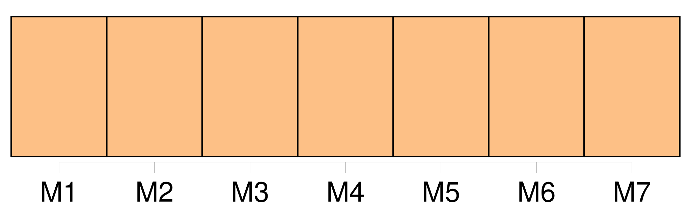

Longueur nb maillons : 42 mentions |
  |
— Mon Dieu, oui, [on] pourrait prendre le mien à mon bureau! [7 phrases] [On] aurait dit qu'il portait une perruque, tant les mèches garnissant son crâne élevé étaient plates et noires. [65 phrases]
[On] voyait au plafond une grande tache noire produite par la fumée de la lampe. [17 phrases] [On] avait figuré des diamants sur le jabot. [1 phrases]
Pécuchet ne put s'empêcher de dire : [19 phrases] [On] l'avait, à quinze ans, retiré de pension pour le mettre chez un huissier. [6 phrases] À sa majorité, [on] lui versa quelques mille francs. [10 phrases] Ce qu' [on] appelle le coup de foudre est vrai pour toutes les passions. [16 phrases] Ils faisaient des réflexions sur les pièces de théâtre dont [on] parlait, sur le gouvernement, la cherté des vivres, les fraudes du commerce. [3 phrases]
Quand [on] demandait leur passeport, ils faisaient mine de l'avoir perdu, se donnant pour deux étrangers, deux Anglais. [2 phrases]
Ce qu'ils admirèrent du cèdre, c'est qu' [on] l'eût rapporté dans un chapeau. [128 phrases] Il connaissait leur rêve, et un beau jour vint leur dire qu' [on] lui avait parlé d'un domaine, à Chavignolles, entre Caen et Falaise. [2 phrases] Seulement, tant de la ferme que de la maison ( l'une ne serait pas vendue sans l'autre ), [on] exigeait cent quarante-trois mille francs. [50 phrases] [On] ne répondait pas. [12 phrases] [On] leur avait préparé une soupe à l'oignon, un poulet, du lard et des œufs durs. [23 phrases] En la heurtant avec une commode, [on] venait d'en faire sauter les clous. [13 phrases] Les autres notables étaient : le comte de Faverges, autrefois député, et dont [on] citait les vacheries ; le maire, M. Foureau, qui vendait du bois, du plâtre, toute espèce de choses ; M. Marescot le notaire ; l'abbé Jeufroy, et Mme veuve Bordin, vivant de son revenu. Quant à elle, [on] l'appelait Germaine, à cause de feu Germain son mari. [4 phrases]
La femme était très blonde, avec les pommettes tachetées de son, et cet air de simplicité que l' [on] voit aux manants sur le vitrail des églises. [14 phrases] [On] rencontrait ensuite le vestibule, une deuxième salle plus grande, le salon. [9 phrases] Cependant les bourgeois de Chavignolles désiraient les connaître : [on] venait les observer par la claire-voie. [26 phrases] D'abord, il fallait voir comment [on] opérait chez les autres ; et ils rédigèrent une lettre, où ils demandaient à M. de Faverges l'honneur de visiter son exploitation. [9 phrases] Les deux amis entrèrent dans une luzerne qu' [on] fanait. Des femmes portant des chapeaux de paille, des marmottes d'indienne ou des visières de papier, soulevaient avec des râteaux le foin laissé par terre ; et à l'autre bout de la plaine, auprès des meules, [on] jetait des bottes vivement dans une longue charrette, attelée de trois chevaux. [3 phrases] Les premières politesses échangées, il exposa son système relativement aux fourrages ; [on] retournait les andains sans les éparpiller ; les meules devaient être coniques et les bottes faites immédiatement sur place, puis entassées par dizaines. [2 phrases] Le comte demanda d'où venait cette enfant ; [on] n'en savait rien. [8 phrases] Ils étaient sur la limite d'un champ soigneusement ameubli : un cheval que l' [on] conduisait à la main traînait un large coffre monté sur trois roues. [5 phrases]
[On] avait besoin de lui au château. [8 phrases] Les moutons, çà et là, pâturaient et [on] entendait leur continuel broutement. [3 phrases] Le travail s'y faisait à la mécanique, au moyen d'une turbine, utilisant un ruisseau qu' [on] avait exprès détourné. [9 phrases] Les pains de beurre se suivaient, pareils aux tronçons d'une colonne de cuivre, et de la mousse débordait des seaux de fer-blanc, qu' [on] venait de poser par terre. [2 phrases] [On] y voyait à peine, toutes les meurtrières étant closes. [21 phrases]
Leur exploitation comprenait quinze hectares en cours et prairies, vingt-trois en terres arables et cinq en friches situées sur un monticule couvert de cailloux et qu' [on] appelait la Butte. [1 phrases]
Pour avoir tout de suite de l'argent, ils vendirent leurs fourrages : [on] les paya chez eux ; l'or des napoléons comptés sur le coffre à l'avoine leur parut plus reluisant qu'un autre, extraordinaire et meilleur. [3 phrases]
Partant de ce principe qu' [on] ne saurait avoir trop de blé, ils supprimèrent la moitié environ de leurs prairies artificielles ; et, comme ils n'avaient pas d'engrais, ils se servirent de tourteaux qu'ils enterrèrent sans les concasser, si bien que le rendement fut pitoyable. [5 phrases] Tout le long de l'année, du matin jusqu'au soir, par la pluie, par le soleil, [on] voyait l'éternel banneau avec le même homme et le même cheval, gravir, descendre et remonter la petite colline. [7 phrases] [On] les dupait de toutes les façons. [49 phrases]
Les tuteurs des dahlias étaient gigantesques ; et [on] apercevait, entre ces lignes droites, les rameaux tortueux d'un sophora japonica qui demeurait immuable, sans dépérir, ni sans pousser. [12 phrases]
Ils contemplaient ceux qui s'allongent comme des crinières, ceux qui ressemblent à des îles, ceux qu' [on] prendrait pour des montagnes de neige, tâchant de distinguer les nimbus des cirrus, les stratus des cumulus ; les formes changeaient avant qu'ils eussent trouvé les noms. [9 phrases] Il employa la liqueur belge, le lizier suisse, la lessive, des harengs saurs, du varech, des chiffons, fit venir du guano, tâcha d'en fabriquer, et, poussant jusqu'au bout ses principes, ne tolérait pas qu' [on] perdît l'urine ; il supprima les lieux d'aisances. [On] apportait dans sa cour des cadavres d'animaux, dont il fumait ses terres. [6 phrases]
Heureux les pays où l' [on] trouve des grottes naturelles pleines d'excréments d'oiseaux! |

|
La ressource peut être téléchargée sur la page Ortolang
Si vous avez des questions ou vous voyez des erreurs, merci d'envoyer un mail à silvia.federzoni89@gmail.com
Site développé par S. Federzoni (contact)